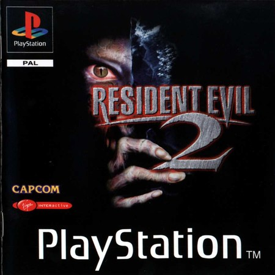

Resident Evil 2, conocido en Japón como Biohazard 2 (バイオハザード２ Baiohazādo Tsû), es un videojuego del género survival horror desarrollado por Capcom y es también el segundo título de la saga de videojuegos Resident Evil fungiendo como la secuela directa del primer título pero con un elenco de personajes diferentes a la entrega anterior. Originalmente lanzado para la PlayStation en 1998 y el segundo en orden de lanzamiento de la saga, el juego fue portado a PC, Nintendo 64, Game.com, Sega Dreamcast y Nintendo GameCube. Resident Evil 2 también estuvo planeado para la Sega Saturn y la Game Boy Advance, pero fueron cancelados por Capcom. Resident Evil 2 actúa como secuela directa, toma lugar dos meses después de los acontecimientos del primer juego donde finalmente, Raccoon City sucumbe ante el peligroso virus-T y dos personas con motivos muy diferentes, se ven obligados a colaborar entre sí para escapar con vida de la horrible pesadilla a la que han entrado.

Resident Evil 2 tomó aproximadamente un año y nueve meses en ser desarrollado. Su equipo de desarrollo constó de cincuenta personas, creado a partir de un prototipo inicial llamado Resident Evil 1.5, sin embargo, su desarrollo fue descartado cuando el juego llevaba cerca del 60 y 80% ya que su productor, en sus propias palabras la consideraba sosa y aburrida. No obstante, se apostó por una idea más cinematográfica apostando por una banda sonora más orquestal. Una de las novedades de Resident Evil 2 respecto al juego original es un nuevo sistema denominado como "Zapping", el cual permite alterar eventos desde una partida con un protagonista en la segunda partida con el otro protagonista, es decir, dependiendo de las decisiones tomadas en el escenario A, estas afectan y alteran eventos en el escenario B, un elemento que también aumenta la rejugabilidad del título.
La música para Resident Evil 2 fue compuesta por Masami Ueda, Shusaku Uchiyama y Shun Nishigaki. Existen 2 álbumes:
Una versión remake fue lanzada a principios de 2019 para PlayStation 4, Xbox One y PC con importantes cambios gráficos, jugabilidad y trama.
En Resident Evil 2 existen 2 caminos, el A (camino por la tienda de armas) y el B (camino por el estacionamiento del R.P.D.); puesto que, hay dos personajes, el jugador tiene la opción de jugar con cualquiera de los dos, el lado A y con el otro el B teniendo así dos parecidas, pero diferentes historias "Claire A - Leon B" y "Leon A - Claire B".
Para Capcom y oficialmente declarado, el lado verdadero de la historia es Claire A - Leon B, esto significa que Claire llegó al R.P.D. por la tienda de armas y Leon por la entrada trasera del R.P.D. Sin embargo, desde el lanzamiento de Resident Evil: The Darkside Chronicles, se tomó como canónico lo ocurrido en ese juego (uno de los principales objetivos del juego es arreglar agujeros argumentales en la historia de Resident Evil). Desde el lanzamiento del remake del juego, se toma como canónico la interpretación de la historia en dicho juego.
Septiembre de 1998: han pasado dos meses desde el incidente de la Mansión, un oscuro episodio donde varios habitantes de la ciudad montañosa de Raccoon City fueron brutalmente asesinados por horribles criaturas creadas accidentalmente por la exposición a un agente patógeno creado por la Corporación farmacéutica Umbrella conocido como el virus-T, un incidente que fue mal investigado por la Policía local. Ante lo pobremente investigado de lo sucedido dado que la mansión Spencer, el Centro de Formación de Umbrella y el área circundante desaparecieron en una devastadora serie de explosiones que destruyeron toda evidencia de la responsabilidad de Umbrella en lo ocurrido, sumado a la negligencia de las autoridades locales al tratar con lo ocurrido e ignorando las advertencias hechas por los sobrevivientes a los eventos mencionados, ocasionó que la mayor o prácticamente toda la población quedara expuesta a la infección a manos del mencionado agente patógeno el cual provocó que los infectados se convirtieran en muertos vivientes y los animales se transformen en horrorosas criaturas en un evento conocido como el incidente de Raccoon City. Este agente patógeno fue desarrollado en secreto por la Corporación Umbrella; una compañía farmacéutica multinacional como parte de un oscuro programa de desarrollo de armas biológicas con propósitos militares que se salió de control.
La historia comienza con Leon Scott Kennedy, un oficial de policía recientemente incorporado a la fuerza policial de Raccoon City coincidiendo su llegada a la ciudad con su primer día de trabajo y Claire Redfield, una joven que viajó allí para buscar a su hermano Chris Redfield quien desapareció en circunstancias desconocidas. A su llegada a Raccoon, ambos personajes tienen encuentros fortuitos con los que una vez fueron los ciudadanos de Raccoon City ahora convertidos en muertos vivientes al ser infectados por el virus, por lo que deciden ir a la estación de Policía de la ciudad para protegerse de las hordas que los persiguen.
Sin embargo en su trayecto en la patrulla en la que viajaban, ambos se topan con un infectado ocasionando que estrellen el vehículo y se vean forzados a tomar caminos separados después de que un camión cisterna conducido por otro infectado se estrelle contra el vehículo policial y estalle.
Pero a su llegada descubren que casi todos los oficiales estaban muertos y gracias a un diario personal abandonado, Claire descubre que Chris junto con sus compañeros de S.T.A.R.S. sobrevivientes al incidente de las montañas Arklay decidieron marcharse a Europa para investigar las irregularidades dentro de la corporación, por lo cual entendiendo que no tiene caso permanecer en este terrible peligro, tanto Claire como Leon, se separan para encontrar sobrevivientes y escapar de la ciudad.
En su recorrido, Claire conoce a una niña que huye de una criatura mutante que la persigue; su nombre es Sherry. Luego de ayudarla en más de una oportunidad, Claire se entera de que el jefe de la policía de la ciudad, Brian Irons aceptó numerosos sobornos de parte de Umbrella a cambio de permitir que la corporación continúe con sus experimentos ilegales en la ciudad y sus alrededores dando como resultado la creación de un agente patógeno más peligroso que el virus-T, el virus-G, un agente viral que puede convertir a un humano en un arma biológica. Tras revelar esto a Claire, Irons intenta matarla, pero el monstruo mutante que persigue a Sherry, termina por asesinarlo. Para escapar de la criatura, Claire y Sherry huyen a través del sistema de alcantarillado de la ciudad, pero desgraciadamente acaban separándose.
Por su parte, Leon conoce a una mujer de rasgos orientales llamada Ada Wong; ella asegura estar en busca de su novio, un empleado de Umbrella llamado John Clemens. Pese a que Leon le ofrece acompañarla en su búsqueda, Ada prefiere continuar sola y en su trayecto a través de una planta de tratamiento cercana a la comisaría, se encuentra con Sherry. En el camino recoge un colgante de oro que la niña había extraviado durante la persecución de la criatura mutante. Sin embargo durante su propia aventura, Leon es acosado por un modelo de arma biológica clase Tyrant, enviado por la Corporación Umbrella con un objetivo que se irá desvelando en el transcurso de la historia. Este Tyrant es el modelo T-103.
Tras llegar a las alcantarillas de la ciudad, Ada vuelve a encontrarse con Leon que esta vez le insiste en permanecer con ella para protegerla. En ese momento una mujer aparece repentinamente y le dispara a Ada, pero Leon se interpone en el recorrido de la bala y resulta herido. Ada persigue por las alcantarillas a la mujer y finalmente logra alcanzarla. La mujer se identifica como Annette, una empleada de Umbrella la cuál le cuenta a Ada cómo ella junto a su esposo, un virólogo llamado William Birkin crearon conjuntamente el virus-G; sin embargo, (William) Birkin no estaba dispuesto a entregar el resultado final de su investigación a Umbrella pretendiendo vendérsela al gobierno de EEUU; más que enterados de su intento de traición, la corporación envió a un grupo élite de comandos para recuperar de una forma u otra la investigación del virus aunque con ello debían eliminarlo. Birkin gravemente herido, se inyecta la única muestra que contiene el virus-G en su poder, esperanzado en que sus propiedades regenerativas lo salven de la muerte, pero aunque sobrevive, el virus muta en su cuerpo transformándolo en una horrible criatura que resulta ser el monstruo del cual Sherry huye; posteriormente mata a los comandos y destruye varios contenedores con el virus-T desencadenando con ello, el brote viral que destruye a Raccoon City cuando dichas muestras fueron consumidas por las ratas que anidaban dentro de las alcantarillas de la ciudad.
Mientras conversan, Annette reconoce el colgante que Ada encontró momentos antes y trata de quitárselo produciéndose un forcejeo que termina con Ada arrojando a la mujer desde lo alto del sistema de alcantarillado dándola por muerta. Antes de volver con Leon, Ada se percata de que en el interior del colgante está almacenada una muestra del virus-G explicándose así la misión del Tyrant enviado por Umbrella: recuperar una muestra del virus creado por los Birkin.
Claire logra reencontrarse con Sherry, solamente para descubrir que Birkin le ha implantado un embrión (parecido al que mató a Irons) con el cual Birkin pretende propagar descendencia usando a su propia hija debido a que ambos comparten el mismo ADN por lo cual no puede ser rechazada como le ocurrió a Irons. Para ayudarla, Claire, Leon y Ada acuden a una fábrica abandonada en donde esperan hallar la entrada al centro secreto subterráneo de Umbrella.
En el trayecto resultan sorprendidos por Birkin, quien hiere de gravedad a Ada y luego huye. Con tal de sanar sus heridas, Leon deja el grupo e intenta buscar material de curación en el edificio.
En el camino Annette que revela seguir con vida, intercepta a Leon y le revela que Ada es una espía que trabaja para una corporación rival que busca apoderarse de una muestra del virus-G; Leon no le cree, pero en ese momento el Tyrant T-103 programado para recuperar una muestra del virus y que fuera enviado por Umbrella acosando a Leon durante todo el trayecto, los ataca, aunque Annette consigue escapar. En ese instante aparece Ada y le ayuda a Leon a derrotar al Tyrant, pero después de conseguirlo, ella cae al suelo gravemente herida y Leon la da por muerta. Instantes antes ella le había confesado estar enamorada de él.
Mientras tanto, poco antes de abandonar el laboratorio, Annette se topa con Birkin, quien la hiere mortalmente. Claire aparece en el sitio y antes de fallecer producto de sus heridas, Annette le explica el procedimiento para crear un anticuerpo capaz de eliminar el embrión que su esposo ha implantado en Sherry. Una vez que logran crearlo, se lo inyectan a la niña poniéndola a salvo.
Posteriormente el grupo de protagonistas que consigue huir a bordo de un tren, es perseguido por Birkin el cual ha asumido una apariencia grotesca debido a las mutaciones en su cuerpo, provocando que el sistema de autodestrucción de la máquina se active forzando a los protagonistas a detenerlo en medio del túnel. Una vez logran detener el tren, el trío consigue escapar dejando a Birkin atrapado, quien finalmente muere luego de que el tren explotara.
En las escenas finales del juego, Leon revela su intención de acabar con Umbrella mientras abandona Raccoon City junto con Sherry, y Claire continúa con la búsqueda de su hermano. Al final, se revela que Ada sobrevivió al mortal encuentro con la criatura consiguiendo hacerse con una muestra del virus-G.
{kind=link}
{kind=link}
{kind=link}
{kind=link}
{kind=link}
{kind=link}
{kind=link}